🛠️ Routing StatisRouter MikroTik
Panduan Praktikum – Konfigurasi routing statis pada dua buah router MikroTik R951Ui-2HND.
A. Teori
Routing static adalah menambahkan jalur routing tertentu secara manual. MikroTik secara default akan membuat jalur routing otomatis (dynamic route) ketika menambahkan ip address pada interface.
1. Instalasi Jaringan
- Pasang 2 Router MikroTik R951Ui-2HND.
- 3 kabel straight UTP.
- Hubungkan ether1 Router 1 ke ether1 Router 2.
- Hubungkan masing-masing ethernet2 ke jaringan lokal atau ke PC, seperti pada gambar berikut:
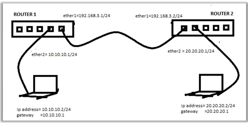
Konfigurasi Router 1
2. Menggunakan ether3 untuk konfigurasi
Gunakan ether3 untuk melakukan konfigurasi, menggunakan ip 192.168.88.1. Seperti pada gambar berikut:
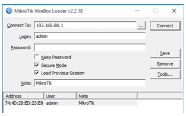
3. Hapus Bridge port Ether2
Secara default ether2 berfungsi sebagai bridge. Karena akan difungsikan sebagai router, maka hapus interface ether2 dari bagian bridge.
- Klik Bridge → Klik Ports → Klik ether2 → Klik dan seperti pada gambar berikut:
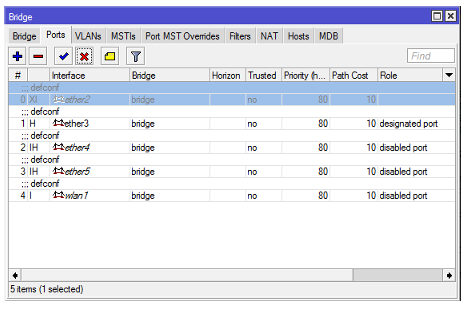
4. Hapus IP, Firewall
- Pilih IP → Klik Firewall → Klik Filter Rules → Lakukan blok
- Seperti pada gambar berikut:
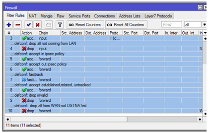
Catatan: Ini untuk menghindari tidak bisa login/konek, mungkin ada yang terblokir.
5. Menambahkan IP address ether1 dan ether2
- Klik New Terminal, isikan skrip berikut:
[admin@MikroTik] > ip address add address=192.168.3.1/24 interface=ether1
[admin@MikroTik] > ip address add address=10.10.10.1/24 interface=ether26. Routing Statik
Perintah route statis : ip route add dst-address=<ip tujuan/mask> gateway=<ip gateway>, seperti pada skrip berikut:
[admin@MikroTik] > ip route add dst-address=20.20.20.0/24 gateway=192.168.3.27. Melihat Hasil Routing
Menggunakan menu IP → Routes, amati seperti pada gambar berikut:
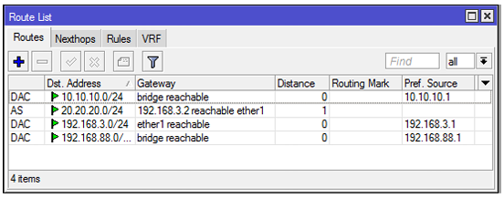
8. Atau menggunakan command line
Melalui New Terminal : ip route print
[admin@MikroTik] > ip route print
Flags: X - disabled, A - active, D - dynamic, C - connect, S - static, r - rip, b - bgp, o - ospf, m - mme, B - blackhole, U - unreachable, P - prohibit
# DST-ADDRESS PREF-SRC GATEWAY DISTANCE
0 ADC 10.10.10.0/24 10.10.10.1 bridge 0
1 A S 20.20.20.0/24 192.168.3.2 1
2 ADC 192.168.3.0/24 192.168.3.1 ether1 0
3 ADC 192.168.88.0/24 192.168.88.1 bridge 09. Konfigurasi PC 1
Tambahkan konfigurasi ip statis pada PC 1, seperti pada gambar berikut:
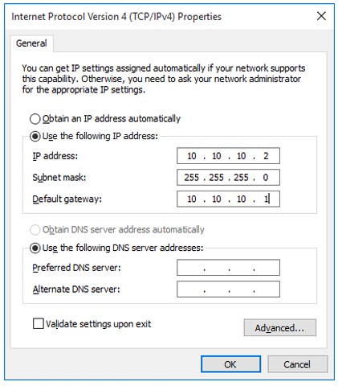
Konfigurasi Router 2
10. Menggunakan ether3 untuk konfigurasi
Gunakan ether3 dengan ip 192.168.88.1, seperti pada gambar berikut:
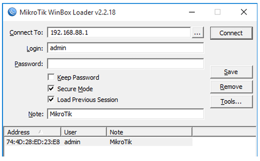
11. Hapus Bridge port Ether1
Secara default ether1 berfungsi sebagai bridge. Hapus interface ether1 dari bagian bridge.
- Klik Bridge → Klik Ports → Klik ether1 → Klik dan seperti pada gambar berikut:
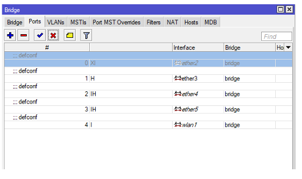
12. Menambahkan IP address ether1 dan ether2
- Klik New Terminal, isikan skrip berikut:
[admin@MikroTik] > ip address add address=192.168.3.2/24 interface=ether1
[admin@MikroTik] > ip address add address=20.20.20.1/24 interface=ether213. Routing RIP Router 2
Catatan: Pada praktikum ini sebenarnya digunakan routing statis, namun pada judul tertulis "Routing RIP Router 2". Perintah tetap menggunakan static seperti di bawah.
Perintah route statis : ip route add dst-address=<ip tujuan/mask> gateway=<ip gateway>, seperti pada skrip berikut:
[admin@MikroTik] > ip route add dst-address=10.10.10.0/24 gateway=192.168.3.114. Melihat Hasil Routing
Menggunakan menu IP → Routes, amati seperti pada gambar berikut:
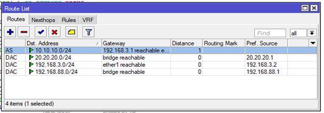
15. Atau menggunakan command line
Melalui New Terminal : ip route print
[admin@MikroTik] > ip route print
Flags: X - disabled, A - active, D - dynamic, C - connect, S - static, r - rip, b - bgp, o - ospf, m - mme, B - blackhole, U - unreachable, P - prohibit
# DST-ADDRESS PREF-SRC GATEWAY DISTANCE
0 A S 10.10.10.0/24 192.168.3.1 1
1 ADC 20.20.20.0/24 20.20.20.1 bridge 0
2 ADC 192.168.3.0/24 192.168.3.2 ether1 0
3 ADC 192.168.88.0/24 192.168.88.1 bridge 016. Konfigurasi PC 2
Tambahkan konfigurasi ip statis pada PC 2, seperti pada gambar berikut:
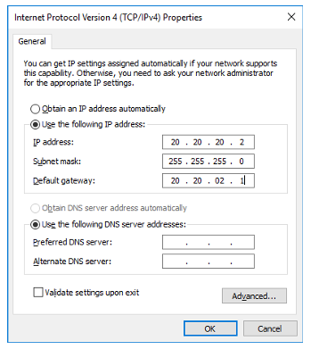
Pengujian Koneksi
17. Menguji Koneksi dari PC 1
Lakukan pengujian dengan perintah ping dari PC 1 ke PC 2 (10.10.10.2), seperti pada gambar berikut:
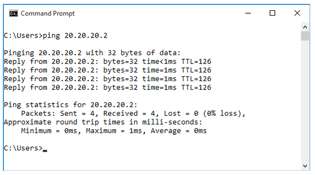
18. Menguji Koneksi dari PC 2
Lakukan pengujian dengan perintah ping dari PC 2 ke PC 1 (10.10.10.1), seperti pada gambar berikut:

Hasil yang diharapkan: Reply dari alamat tujuan menandakan koneksi berhasil dan konfigurasi routing statis telah bekerja dengan benar.